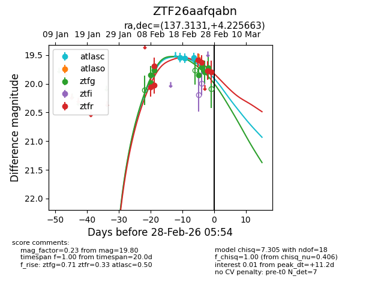
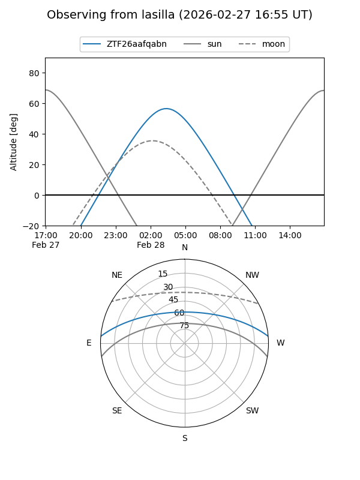
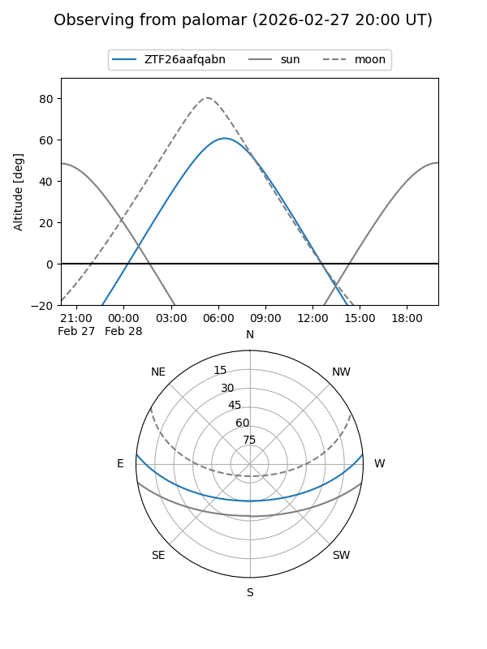
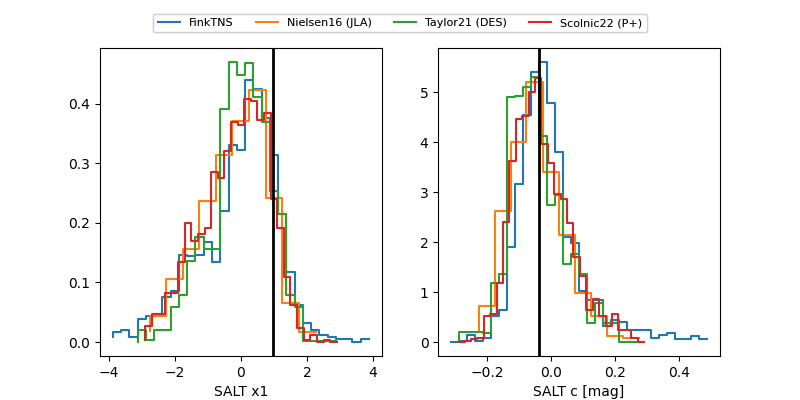

ZTF26aafqabn
Target ZTF26aafqabn at 2026-02-28 05:55
Aliases and brokers:
FINK: link
Lasair: link
ALeRCE: link
alt names
ZTF26aafqabn (ztf,fink_ztf)
Coordinates:
equatorial (ra, dec) = 137.3131,+4.22566
equatorial (HMS+DMS) = 09:09:15.16,+04:13:32.39
galactic (l, b) = (226.0533,+32.39356)
Flags:
Photometry:
last atlasc=19.54, ztfg=19.72, ztfr=19.80
3 atlasc, 8 ztfg, 7 ztfr detections
Lightcurve

Visibility


Additional plots
